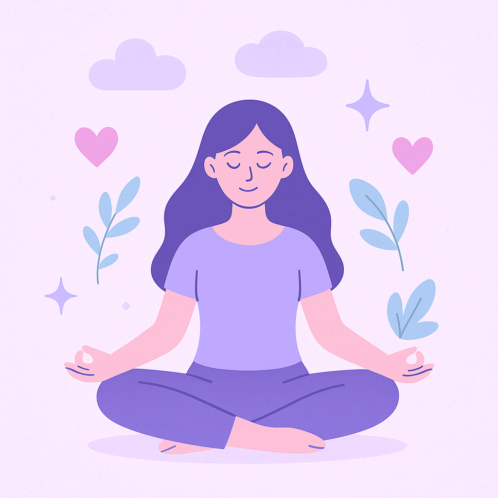

When we or someone we love is living with bipolar disorder, it’s important to pause and ask: What is bipolar?
3-Sides represents the emotional shifts of bipolar life: the highs, the lows, and the moments of balance. This planner helps you make sense of it all, one day at a time.
Stability is the sweet spot — when your mood is balanced, your thoughts are clear, and you feel grounded. You’re able to enjoy your life, stick to routines, manage stress, and connect with people in a steady way. Stability isn’t about being perfect — it’s about feeling more like yourself. It’s the calm in the middle of the storm, the feeling that you can breathe fully again without fear of the next swing.
During stable periods, you may find it easier to build healthy habits, follow through on plans, and reflect on past episodes with more clarity. This is a powerful time for self-awareness and growth. It’s also when your support tools — like this app — can be fine-tuned to prepare for future highs or lows.
The goal of this app is to help you stay in this place as much as possible, and return here gently and safely when you’re not. Stability deserves celebration — not because it means everything is perfect, but because it means you’re at peace, moving forward one steady step at a time.
Mania can feel like a superpower. You might feel unstoppable — bursting with energy, creativity, confidence, and big ideas that seem to flow faster than you can keep up with. At first, it might feel exciting, even euphoric. You may find yourself starting new projects, talking a mile a minute, making bold plans, or feeling like everything is finally falling into place. But mania isn’t just about feeling good — it can also come with serious risks. You might sleep very little and still feel wired, take impulsive actions like overspending, driving too fast, hypersexuality, or starting risky relationships. You might feel unusually irritable or defensive when others question you, or like you're on a mission and no one can slow you down.
The thing about mania is that it often sneaks in quietly, feeling helpful or powerful at first, which is why it’s so important to learn your early signs and triggers. Recognizing those signs — even the subtle ones — can help you act before things spiral. This planner can be a tool for spotting patterns, staying grounded, and reaching out for support when needed. You deserve stability, and having a plan in place is a powerful act of self-love and protection.
Hypomania is like mania’s quieter cousin. It can feel like a burst of sunshine after a long storm — your mind feels sharp, your energy is up, and you might feel more social, creative, or productive than usual. Unlike full mania, hypomania doesn’t typically cause major disruptions in your life — you may still be going to work or keeping up with your responsibilities. In fact, it can feel really good. But it’s also easy to miss or dismiss, especially because it can feel like “just having a good day.” The challenge is that hypomania can escalate into full-blown mania or crash into depression if not recognized early. Tracking your sleep, energy, and behavior during these times can help you catch it before it tips too far. Knowing your early signs gives you the power to pause, reflect, and protect your stability before things spiral.
Bipolar depression is more than just feeling sad — it's like a fog that settles over everything. It’s a deep, persistent heaviness that can make even the simplest tasks feel overwhelming. You might feel numb, hopeless, or weighed down by sadness. It can show up as a lack of energy, loss of interest in things you used to enjoy, or feeling disconnected from the people around you. Even things like eating, showering, or getting out of bed might feel too difficult.
Depression can also come with negative thoughts that lie to you — telling you you're a burden, that you're not enough, or that things will never get better. These thoughts are part of the illness, not the truth. Guilt and shame often tag along, especially if you’ve been in a productive or "high" state before and now feel like you’ve crashed.
It’s important to remember: depression is not your fault. It doesn’t mean you’re weak or lazy — it means your brain is going through something heavy. Recognizing your early warning signs, having a safety plan, and checking in with your support system can make a huge difference. Even if you can’t see it right now, you are not alone, and this low will not last forever. This planner is here to help you document your patterns, reflect gently, and remind yourself that healing is possible, one step at a time.
Mixed states are when symptoms of mania and depression show up at the same time. You might feel extremely agitated or restless, but also hopeless and low. You could be full of energy but filled with despair — crying while your mind is racing. These episodes are often the most dangerous because you may feel impulsive and hopeless at once, which can lead to risky choices or thoughts of self-harm. They’re hard to recognize and even harder to explain. This app can help you track overlapping feelings, so you’re more equipped to spot when you’re not “just anxious” or “just sad” — you’re in a mixed state, and you deserve support.
Rapid cycling is when mood episodes — like mania, hypomania, or depression — happen more often than usual. Instead of lasting for weeks or months, these shifts can happen in just days or even hours. You might feel like you're constantly flipping between emotional states, never getting a break to catch your breath. This can feel exhausting, confusing, and hard to explain to others.
If you've ever felt like your mood changes “too fast” to be taken seriously, know that you are not imagining it. Rapid cycling is real, and it's more common in some people with bipolar than others. It doesn’t make your experience less valid — it just means your emotional shifts happen more quickly. Tracking your moods, patterns, and triggers in this app can help you notice those shifts sooner and feel more prepared. You're not broken — your brain is just moving through cycles at a different rhythm.